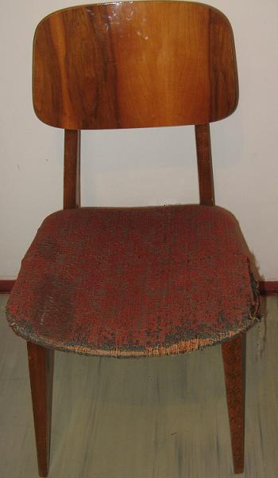

sufragerie - definiție și paradigmă | dexonline
donează
navigare despre noi informații contact blog implică-te cum poți ajuta topul voluntarilor resurse abrevieri folosite articole lingvistice ghid de exprimare cuvântul zilei cuvântul lunii cuvinte aleatorii Scrabble unelte legături externe English español magyar română Anonim preferințe autentificare rezultate (12) declinări12 definiții pentru sufragerie sofragerie
Dicționare explicative
Explică cele mai întâlnite sensuri ale cuvintelor.
SUFRAGERÍE, sufragerii, s. f. Cameră special amenajată și mobilată în care se servește masa. ♦ Mobilierul pentru această cameră. [ Var. : sofrageríe s. f. ] – Sufragiu 1 + suf. -ărie.
sursa: DEX 09 (2009) adăugată de blaurb. acțiuni semnalează o greșeală permalink +1 definiție identică ×Semnalează o greșeală
Vă mulțumim pentru semnalare! închideSUFRAGERÍE, sufragerii, s. f. Cameră special amenajată și mobilată în care se servește masa. ♦ Mobilierul pentru această cameră. [ Var. : sofrageríe s. f. ] – Sufragiu 1 + suf. -ărie.
sursa: DEX 98 (1998) adăugată de rain_drop acțiuni semnalează o greșeală permalinkSUFRAGERÍE, sufragerii, s. f. 1. Cameră în care se servește masa și care este mobilată cu mobilele necesare pentru aceasta. Cînd intrarăm în sufragerie, însetați, plini de foame și de frig, ne izbi deodată lumina vie a lumînărilor. SADOVEANU, O. I 452. În sufrageria conacului... o fetișcană așternea masa pentru o singură persoană. REBREANU, R. II 70. Se așteptau musafiri la masă. În sufragerie se auzea zgomot de tacîmuri. VLAHUȚĂ, O. A. 150. 2. Mobilierul dintr-o sufragerie ( 1 ), compus din masă, bufet etc. Sufragerie de nuc. – Variantă: sofrageríe (C. PETRESCU, O. P. II 117, CARAGIALE, O. II 99, ALECSANDRI. T. I 93) s. f.
sursa: DLRLC (1955-1957) adăugată de LauraGellner acțiuni semnalează o greșeală permalinkSUFRAGERÍE ~i f. 1) Cameră în care se servește masa. 2) Mobilier pentru asemenea cameră. [G.-D. sufrageriei; Sil. su-fra- ] / sufragiu + suf. ~ărie
sursa: NODEX (2002) adăugată de siveco acțiuni semnalează o greșeală permalinkSOFRAGERÍE s. f. v. sufragerie.
sursa: DEX 09 (2009) adăugată de blaurb. acțiuni semnalează o greșeală permalink +2 definiții identiceSOFRAGERÍE s. f. v. sufragerie.
sursa: DEX 98 (1998) adăugată de IoanSoleriu acțiuni semnalează o greșeală permalinkSOFRAGERÍE s. f. v. sufragerie.
sursa: DLRLC (1955-1957) adăugată de LauraGellner acțiuni semnalează o greșeală permalinksofragerie f. sală de mâncare.
sursa: Șăineanu, ed. VI (1929) adăugată de blaurb. acțiuni semnalează o greșeală permalinksofrageríe f. (d. sofragiŭ. D. rom. vine ngr. sofradzaria ). Camera în care e masa de mîncare (numită și sală de mîncare, după fr. sale à manger, ĭar pe la internate, cazarme, închisorĭ refectoriŭ ). – Și su-.
sursa: Scriban (1939) adăugată de blaurb. acțiuni semnalează o greșeală permalinkDicționare morfologice
Se indică corespondența dintre forma de bază a unui cuvânt și flexiunile sale.
sufrageríe (su-fra-) s. f. , art. sufragería, g.-d. art. sufrageríei; pl. sufrageríi, art. sufrageríile (-ri-i-)
sursa: DOOM 2 (2005) adăugată de raduborza acțiuni semnalează o greșeală permalinksufrageríe s. f. (sil. -fra- ), art. sufragería, g.-d. art. sufrageríei; pl. sufrageríi, art. sufrageríile (sil. - ri-i -)
sursa: Ortografic (2002) adăugată de siveco acțiuni semnalează o greșeală permalinksufragerie
sursa: MDO (1953) adăugată de Ladislau Strifler acțiuni semnalează o greșeală permalinksofragerie , -riei gen. a.
sursa: IVO-III (1941) adăugată de Ladislau Strifler acțiuni semnalează o greșeală permalinkDicționare relaționale
Nu reprezintă definiții, ci se indică relații între cuvinte.
SUFRAGERÍE s. sală de mese, sală de mâncare, (înv. și reg.) prânzitor, (înv.) sală de ospețe.
sursa: Sinonime (2002) adăugată de siveco acțiuni semnalează o greșeală permalinkSUFRAGER I E s. sală de mese, sală de mîncare, ( înv. și reg. ) prînzit o r, ( înv. ) sală de osp e țe.
sursa: Sinonime82 (1982) adăugată de LauraGellner acțiuni semnalează o greșeală permalink Intrare: sufragerie sufragerie substantiv feminin silabație: -fra- substantiv feminin ( F134 ) Surse flexiune: DOR nearticulat articulat nominativ-acuzativ singular sufrager i e sufrager i a plural sufrager i i sufrager i ile genitiv-dativ singular sufrager i i sufrager i ei plural sufrager i i sufrager i ilor vocativ singular plural sofragerie substantiv feminin substantiv feminin ( F134 ) nearticulat articulat nominativ-acuzativ singular sofrager i e sofrager i a plural sofrager i i sofrager i ile genitiv-dativ singular sofrager i i sofrager i ei plural sofrager i i sofrager i ilor vocativ singular plural Copyright © 2004-2020 dexonline (https://dexonline.ro) licență confidențialitate găzduit de Hosterion